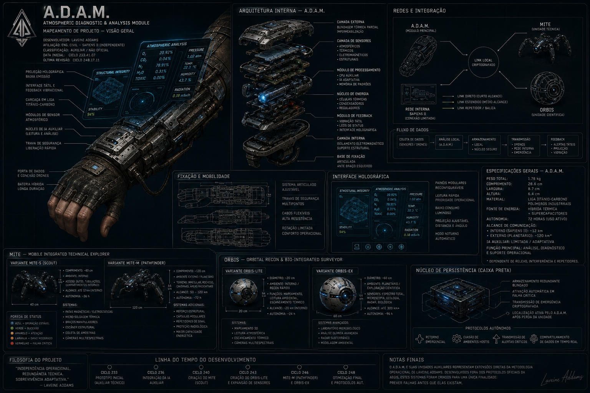
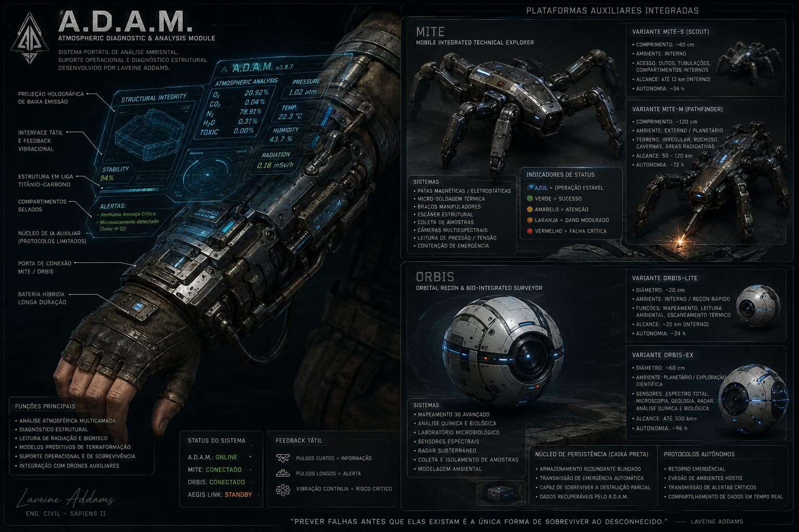

Plataforma integrada de diagnóstico atmosférico, análise estrutural e gerenciamento de sobrevivência em ambientes hostis, desenvolvida independentemente por Laveine Addams nos anos posteriores ao Grande Acidente da Sapiens II.
Originalmente concebido como um bracelete técnico auxiliar para manutenção dos Sistemas de Suporte à Vida da Arca, o equipamento evoluiu para uma das ferramentas pessoais mais complexas já produzidas fora dos protocolos oficiais da AEGIS.
Fisicamente acoplado ao antebraço esquerdo através de estrutura metálica semiarticulada em liga de titânio-carbono, o módulo projeta interfaces holográficas compactas de baixa emissão luminosa, operando via feedbacks táteis e pulsos vibracionais discretos.
Seu núcleo é alimentado por uma IA auxiliar limitada desenvolvida a partir de fragmentos de antigos protocolos de engenharia descartados pela AEGIS — sem autoridade sobre sistemas da nave, mas com capacidade adaptativa consideravelmente avançada para um módulo independente.

FIG. 01 — MAPEAMENTO DE PROJETO A.D.A.M. — VISÃO GERAL TÉCNICA // LAV-ADDAMS-001
// Ciclos de desenvolvimento independente — Pós-Grande Acidente da Sapiens II
Compacta (~40cm), operação interna na Sapiens II. Movimentação silenciosa e precisa em ambientes destruídos via microgarras eletrostáticas.
Robusta (~1,2m), missões extraplanetárias. Reforço estrutural, maior capacidade energética e módulos adicionais de exploração ambiental.
Ambas as variantes utilizam núcleo energético híbrido de longa duração alimentado por células de armazenamento térmico e microplacas fotovoltaicas adaptativas. Em ambientes planetários, a recarga ocorre por absorção solar direta, luz estelar intensa ou conversão térmica de ambientes superaquecidos.
Os sistemas funcionais integrados incluem: micro-soldagem térmica, braços manipuladores de precisão, scanner estrutural, coleta de amostras, câmeras ópticas multiespectrais, leitura térmica, análise de tensão estrutural e protocolos básicos de contenção de emergência.
Compacta (~20cm de diâmetro). Reconhecimento rápido e mapeamento interno. Extremamente veloz e silenciosa, sem contato físico constante com superfícies.
Grande (~60cm de diâmetro). Exploração planetária profunda. Maior capacidade computacional, armazenamento avançado e módulos laboratoriais adicionais.

FIG. 02 — A.D.A.M. v3.9.7 COM PLATAFORMAS AUXILIARES INTEGRADAS // RENDER TÉCNICO — LAVEINE ADDAMS
// Padrão cromático compartilhado entre MITE e ORBIS — leitura operacional unificada
Embora oficialmente classificados apenas como equipamentos auxiliares de engenharia, o A.D.A.M. e suas unidades complementares representam, na prática, extensões diretas da metodologia operacional de Laveine Addams.
Todos os sistemas foram concebidos sob a mesma lógica funcional: independência operacional, redundância técnica e sobrevivência adaptativa diante de ambientes imprevisíveis. Dentro da Sapiens II, poucos engenheiros compreendem tão profundamente que a diferença entre continuar vivo e desaparecer no vazio frequentemente depende da capacidade de prever falhas antes que elas existam formalmente.